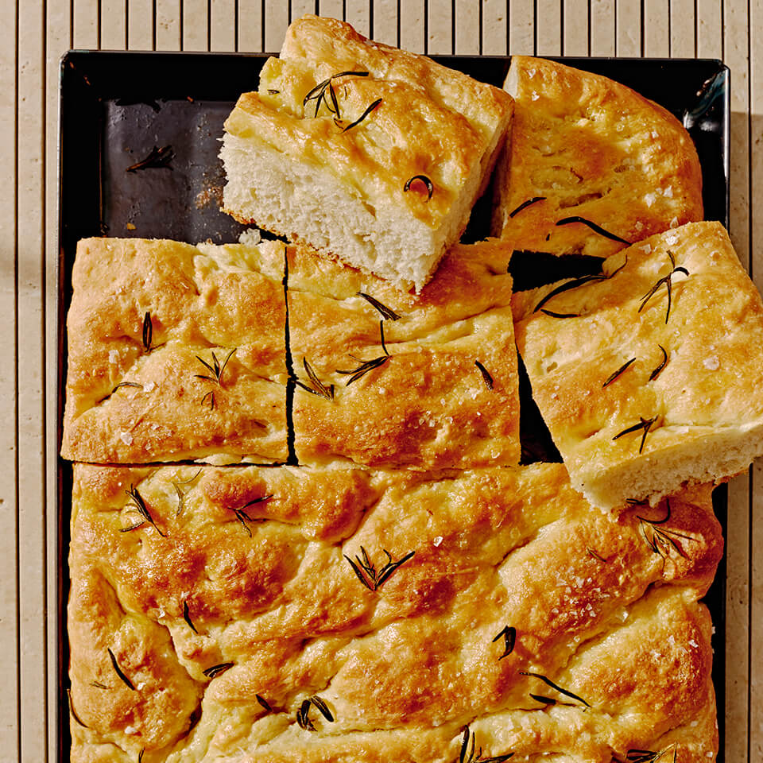

Home
Focaccia

Description:
Focaccia is a leavened flat bread. The oven-baked Italian dish can be served as a side or used as sandwich bread. It is traditionally made with flour, yeast, oil, water, and salt. Some recipes, such as this one, are flavored with seasonings and topped with cheese.
Ingridients:
- All purpose flour
- Dry Yeast
- Salt, sugar, seasonings
- Olive and vegetable oil
- Warm water
- Mozzarella and Parmesan cheese
How To Make Focaccia
- Step 1: Combine flour, yeast, salt, sugar, garlic powder, oregano, thyme, basil, and black pepper in a large bowl. Add water and vegetable oil, then mix until dough comes together.
- Step 2: Turn dough out onto a lightly floured surface and knead until smooth and elastic. Lightly oil a large bowl; place the dough in the bowl and turn to coat with oil. Cover with a clean, damp cloth and let rise in a warm place for 20 minutes.
- Step 3: Preheat the oven to 450 degrees F (230 degrees C). Lightly grease a baking sheet. Punch dough down and place on prepared baking sheet. Pat into a 1/2 inch thick rectangle. Brush top with olive oil and sprinkle with mozzarella and Parmesan cheese.
- Step 4: Bake in the preheated until golden brown, about 15 minutes. Cut into 12 pieces and serve warm.